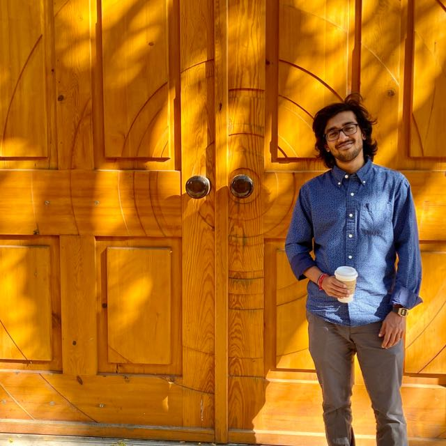
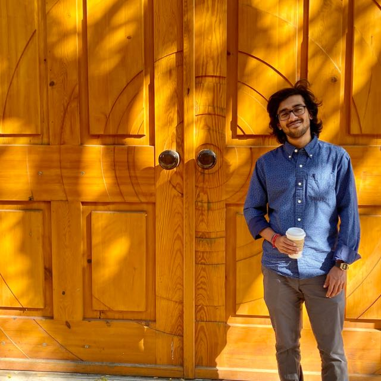

Intro
Hi my name is Sowmma Roy, feel free to call me Roy! Here is what I often look like: 
Hi my name is Sowmma Roy, feel free to call me Roy! Here is what I often look like: 
Until high school I grew up in Dhaka, Bangladesh 
In taking different classes at Earlham I cultivated an interest to look at scenarios from different lenses. I enjoyed learning about philosophy, Buddhism and cognitive psychology, and I ended up majoring in business management.
When I interned in my junior year as a Product Manager for the native mobile app, I became introduced to the roles of the departments and the work culture in a tech company. I wanted to get back to that working space and I aspire to come at it from a design perspective.
Being involved in school as a resident assistant I found an opportunity to help shape the residential experience of first year students. This allowed me to harness my empathy and be strategic with solving student needs through communication, programs, and sharing resources.
Getting a taste of the tech working space I look forward to being in that space and solve problem creatively. This brought me to decide pursue this path and I coming from the alley of design. I am excited to study interaction design at George Brown School of Design. Here I aim to:
I have taken classes in IA, 2D Viz, and VD and am currently taking IA2, 3D Viz, and ID. See some of my sketches in this journey so far right here: Roy's Dribbble
I have started to read and watch documentaries on design. I enjoy watching Gary Hutsuits documentaries; Helvetica and Rams are my favorite.